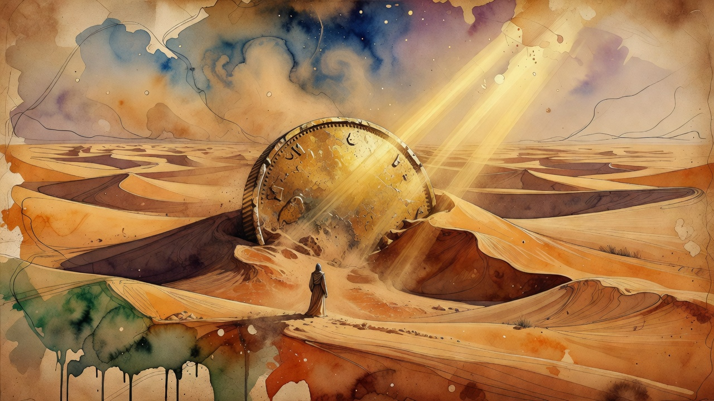

Record Funding
OpenAI Discusses $30B Fundraising Round at $1.4T Valuation
OpenAI is in talks to raise $30 billion in what would be the largest private AI fundraising round ever, with UAE funds including MGX anchoring up to $10 billion and BlackRock also participating. The pre-money valuation is pegged at $1.4 trillion and the company's IPO plans have been postponed.